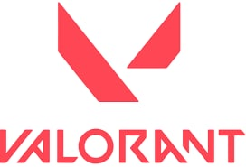
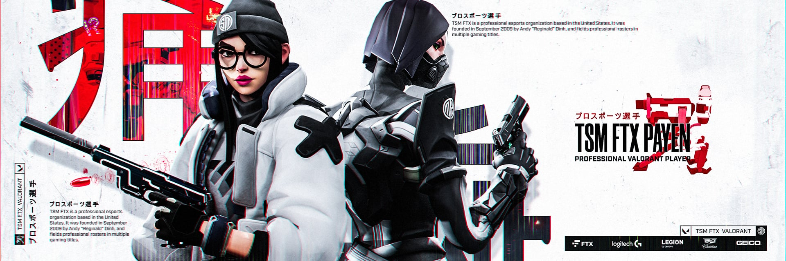

**Valorant** is a free-to-play tactical first-person shooter developed by Riot Games, where two teams of five players compete in round-based matches by attacking or defending bomb sites using a device called the Spike. What makes the game stand out is its mix of precise shooting mechanics and unique “Agent” abilities, which include skills like smokes, flashes, healing, and reconnaissance, adding a strong layer of strategy and teamwork. Players must communicate, plan, and adapt to different maps and situations, making every round feel competitive and dynamic. Since its release in 2020, Valorant has also grown into a major esport through the Valorant Champions Tour, attracting players and audiences worldwide.
Beyond its core gameplay, **Valorant** a constantly evolving experience through regular updates, new Agents, maps, and seasonal events introduced by Riot Games. The game rewards both mechanical skill and smart decision-making, encouraging players to master different roles such as duelists, controllers, sentinels, and initiators. Its competitive ranking system pushes players to improve over time, while casual modes provide a more relaxed way to enjoy the game. Devloped by Riot games with a vibrant global community and the high-stakes tournaments of the Valorant Champions Tour, Valorant continues to grow as one of the most popular and influential shooters in modern.


To play **Valorant**, you join a match as one of several Agents, each with unique abilities, and work with your team of five to either attack or defend bomb sites. As an attacker, your goal is to plant the Spike and protect it until it explodes, while as a defender, you must stop the plant or defuse the Spike if it’s already placed. At the start of each round, you buy weapons and abilities using in-game currency earned from previous rounds, so managing money is important. Success in the game depends on accurate shooting, smart use of abilities, map awareness, and clear communication with teammates, making teamwork and strategy just as important as individual. How to play Valorant
As you continue playing **entity["video_game","Valorant","Riot Games FPS"]**, improving comes from learning maps, mastering crosshair placement, and understanding when to use your Agent’s abilities effectively. Players often develop game sense by predicting enemy movements, controlling key areas, and coordinating strategies like pushing sites together or holding defensive angles. Practicing aim in modes like Deathmatch and communicating clearly with teammates can make a big difference in performance. Over time, consistency, patience, and smart decision-making become more important than just fast reactions, helping you climb ranks and perform better in competitive matches.
| SN | Name | Rate | Qty | Total |
|---|---|---|---|---|
| 1 | Pen | 10 | 10 | 100 |
| 2 | Pencil | 10 | 50 | 500 |
| 3 | Book | 545 | 10 | 5450 |
| 4 | Bag | 2100 | 5 | 10500 |
| Grand Total | 16550 | |||